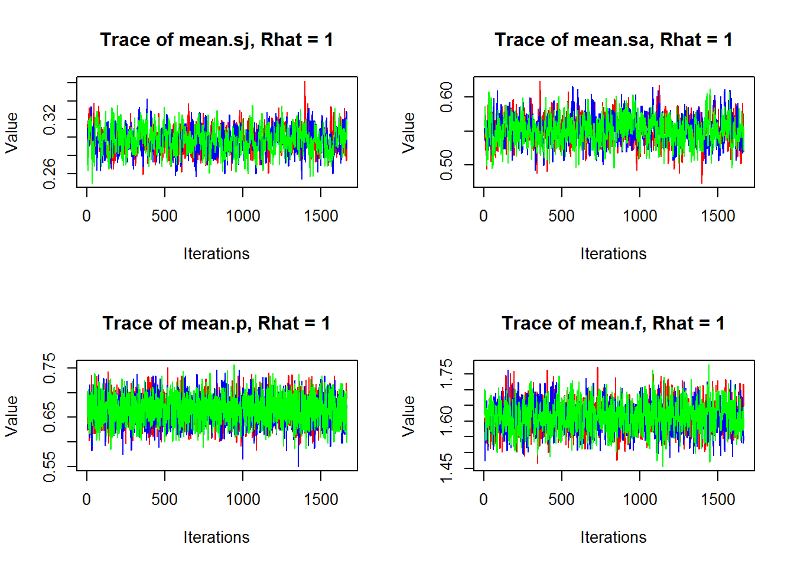
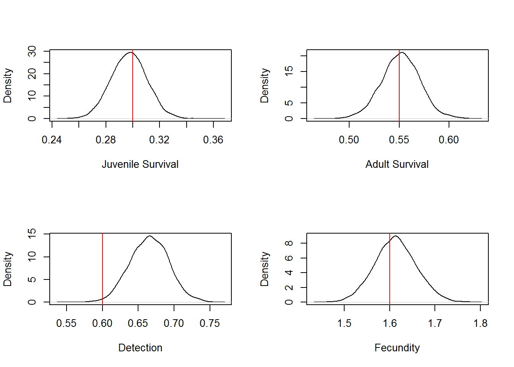
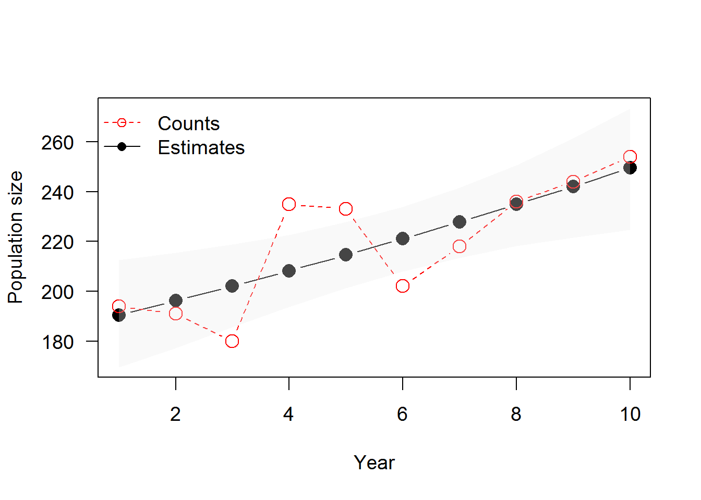

Behnke-Riecke
NRES 746
December 1, 2016
Think about the shrike lifecycle digram from the presentation. We are going to use the stage structured model for this analysis. That means our population is split into juveniles and adults, both of which contribute to the next cohort, and can survive at different rates.
Remember our population equations:
Njuv,t+1 = Njuv,tsj,tft+1 + Nad,tsa,tft+1
Nad,t+1 = Njuv,tsj,t + Nad,tsa,t
To get started, let’s call our jags package (note- here we use jagsUI, but you could also use R2jags)
library(jagsUI)## Warning: package 'jagsUI' was built under R version 3.3.2Here we provide code (Courtesy of Michael Schaub and Mark Kery) to create a shrike population, based on the lifecycle we defined above. Copy and run this code before you go any further!
# Create population function
create.population <- function(Ni = c(10, 10), phi = matrix(c(rep(0.3, 5), rep(0.55, 5)), ncol = 5, byrow = TRUE), f = matrix(c(rep(1.6, 6), rep(1.6, 6)), ncol = 6, byrow = TRUE), Im = rep(0, 6), seed = NA){
if (is.na(seed) == TRUE) seed = runif(1, 0, 100)
set.seed(seed)
T <- ncol(phi) # Number of years
mAge <- nrow(phi) # Maximal number of age(stage) classes
# 1. Expand the vital rate matrices, such that the number of age classes corresponds to the number of years
PHI <- matrix(0, ncol = T, nrow = mAge + T)
PHI[1:nrow(phi),] <- phi
u <- mAge + T - nrow(phi)
if (u > 0){
for (j in 1:u){
PHI[nrow(phi)+j,] <- phi[nrow(phi),]
} # j
} # if
F <- matrix(0, ncol = T + 1, nrow = mAge + T)
F[1:nrow(f),] <- f
u <- mAge + T - nrow(f)
if (u > 0){
for (j in 1:u){
F[nrow(f)+j,] <- f[nrow(f),]
} # j
} # if
Nindex <- c(0, cumsum(Ni))
# 2. Create a Leslie matrix to determine approximately how many individuals will be ever alive in the population
N <- matrix(data = NA, nrow = mAge, ncol = T + 1)
N[,1] <- Ni
A <- array(0, dim = c(mAge, mAge, T))
for (t in 1:T){
for (j in 1:mAge){
A[1,j,t] <- F[j,t] * PHI[1,t] # First row in Leslie matrix
} # j
for (j in 2:mAge){
A[j,j-1,t] <- PHI[j,t] # Subdiagonal
} # j
A[mAge, mAge, t] <- PHI[mAge, t]
} # t
for (t in 1:T){
N[,t+1] <- A[,,t]%*%N[,t] + matrix(c(rep(0, mAge-1), Im[t]), ncol = 1)
} # t
no.ani <- round(sum(N)*5) # 5 times as many individuals that were alive
# 3. Define array for each individual
ind <- array(NA, dim = c(mAge + 4, T + 1, no.ani)) # information about [1-ye, 2-ye, ..., mAge-ye, Juv, Im, Rep, Dead]
# 4. Simulate the fates of individuals already present at t = 1 (in different age classes) and their reproduction
# 4.a: Simulate survival of the individuals present at t=1
# Initialize
for (a in 1:mAge){
if (Ni[a]==0) next
for (i in (Nindex[a]+1):Nindex[a+1]){
ind[a,1,i] <- 1
} # i
} # if
# Simulate survival
z <- numeric()
for (a in 1:mAge){
for (i in (Nindex[a]+1):Nindex[a+1]){
for (t in 1:T){
z[t] <- rbinom(1,1,PHI[a+t,t])
} # t
Z <- max(sum(cumprod(z)))
if (Z==0) {
ind[mAge+4,2,i] <- 1
next
} # if
for (u in 1:Z){
if (a+u < mAge){
ind[a+u,u+1,i] <- 1
} # if
else {
ind[mAge,u+1,i] <- 1
} # else
} # u
# Record year of death (if any)
if (sum(z)==T) next
else {
D <- min(which(z==0))
ind[mAge+4,D+1,i] <- 1
} # else
} # i
} # a
# 3.b: Survival of immigrants (in all years, not just of immigrants present at t = 1)
Nimindex <- c(0, cumsum(Im)) + max(Nindex)
for (t in 1:(T+1)){
if (Im[t]==0) next
for (i in (Nimindex[t]+1):Nimindex[t+1]){
ind[mAge+2,t,i] <- 1
} # i
} # t
for (t in 1:T){
if (Im[t]==0) next
for (i in (Nimindex[t]+1):Nimindex[t+1]){
z <- numeric()
for (d in t:T){
z[d-t+1] <- rbinom(1,1,PHI[mAge+d,d])
} # d
Z <- max(sum(cumprod(z)))
if (Z==0){
ind[mAge+4,t+1,i] <- 1
next
} # if
for (u in 1:Z){
if (t+u <= (T+1)){
ind[mAge,u+t,i] <- 1
} # if
else {next}
} # u
# Record year of death (if any)
if (sum(z)==T-t+1) next
else {
D <- min(which(z==0))
ind[mAge+4,D+t,i] <- 1
} # else
} # i
} # t
# 3.c: Simulate reproduction of all already existing individuals
for (i in 1:max(Nimindex)){
for (t in 1:(T+1)){
g <- which(!is.na(ind[c(1:mAge, mAge+2),t,i]))
if (length(g)==0) next
if (g !=8){
ind[mAge+3,t,i] <- rpois(1,F[g,t])
} # if
if (g==8){
ind[mAge+3,t,i] <- rpois(1,F[mAge,t])
} # if
} # t
} # i
# 4. Simulate the fates of individuals born during the study
# - determine the number of nestlings
# - determine their fate over time
# - determine their reproduction
nestl <- numeric()
nestl[1] <- 0
for (t in 1:(T+1)){
# 4.a: Enumerate the number of nestlings
nestl[t+1] <- sum(ind[mAge+3,t,], na.rm = TRUE)
ind[mAge+1,t,(max(Nimindex)+max(cumsum(nestl[1:t]))+1):(max(Nimindex)+max(cumsum(nestl[1:(t+1)])))] <- 1
if (t==(T+1)) break
# 4.b: Model survival of these individuals
for (i in (max(Nimindex)+max(cumsum(nestl[1:t]))+1):(max(Nimindex)+max(cumsum(nestl[1:(t+1)])))){
z <- numeric()
for (d in t:T){
z[d-t+1] <- rbinom(1,1,PHI[d-t+1,d])
} # d
Z <- max(sum(cumprod(z)))
if (Z==0){
ind[mAge+4,t+1,i] <- 1
next
} # if
for (u in 1:Z){
if (u < mAge){
ind[u,u+t,i] <- 1
} # if
else {
ind[mAge,u+t,i] <- 1
} # else
} # u
# Record year of death (if any)
if (sum(z)==T-t+1) next
else {
D <- min(which(z==0))
ind[mAge+4,D+t,i] <- 1
} # else
} # i
# 4.c: Model reproduction of the surviving individuals
for (i in (max(Nimindex)+max(cumsum(nestl[1:t]))+1):(max(Nimindex)+max(cumsum(nestl[1:(t+1)])))){
for(d in t:T+1){
g <- which(!is.na(ind[c(1:mAge),d,i]))
if (length(g)==0) next
if (g !=8){
ind[mAge+3,d,i] <- rpois(1,F[g,d])
} # if
} # d
} # i
} # t
# 5. Enumerate the total number of animals
Ntotal <- sum(Ni) + sum(ind[mAge+1,1:(T+1),], na.rm = TRUE) + sum(Im)
# Remove empty cells and reorder the array such that it starts with the Juv
IND <- ind[,,1:Ntotal]
IND[1,,] <- ind[mAge+1,,1:Ntotal]
for (a in 1:mAge){
IND[a+1,,] <- ind[a,,1:Ntotal]
} # a
rnames <- numeric()
for (a in 1:mAge){
rnames[a] <- paste(a,"-Year", sep="")
} # a
rnames <- c("Juv", rnames, "Im", "Rep", "Dead")
rownames(IND) <- rnames
# Summary statistics: Number of individuals in each class and year, plus immigration rate
Nu <- matrix(NA, ncol = T+1, nrow = mAge + 4)
for (t in 1:(T+1)){
for (a in 1:(mAge+1)){
Nu[a,t] <- sum(IND[a,t,], na.rm = TRUE)
} # a
Nu[mAge+2,t] <- sum(IND[mAge+2,t,], na.rm = TRUE)
Nu[mAge+3,t] <- sum(Nu[2:(mAge+1),t]) + sum(IND[mAge+2,t,], na.rm = TRUE)
} # t
for (t in 2:(T+1)){
Nu[mAge+4,t] <- sum(IND[mAge+2,t,], na.rm = TRUE) / Nu[mAge+3,t-1]
} # t
rnames <- numeric()
for (a in 1:mAge){
rnames[a] <- paste(a,"-Year", sep="")
} # a
rnames <- c("Juv", rnames, "Im", "Total", "Imm rate")
rownames(Nu) <- rnames
# 6. Output
return(list(IND = IND, Nu = Nu))
}
# Age specific survival probabilities (juv, adult)
sj <- 0.3
sa <- 0.55
# Fecundity rate (females)
f1 <- 1.6 # productivity of 1 year old females
f2 <- f1 # productivity of females older than one year
# Initial population size per age class
Ni <- c(100, 100)
# Number of years
T <- 10
#We apply function create.population (see appendix) to create the shrike population:
ind <- create.population(phi = matrix(c(rep(sj, T-1), rep(sa, T-1)), ncol = T-1, byrow = TRUE), f = matrix(c(rep(f1, T), rep(f2, T)), ncol = T, byrow = TRUE), Im = rep(0, T), Ni = Ni, seed = 2008)
# Observation error for the population survey
sigma <- 10
create.survey.bin <- function(Nu, psur, seed = NA){
if (is.na(seed) == TRUE) seed = runif(1, 0, 100)
set.seed(seed)
T <- length(Nu)
SUR <- numeric()
for (t in 1:T){
SUR[t] <- rbinom(1, Nu[t], psur[t])
} # t
return(SUR)
}
create.survey.norm <- function(Nu, sigma, seed = NA){
if (is.na(seed) == TRUE) seed = runif(1, 0, 100)
set.seed(seed)
T <- length(Nu)
SUR <- numeric()
for (t in 1:T){
SUR[t] <- rnorm(1, Nu[t], sigma[t])
} # t
return(SUR)
}
# Create the population survey data
count <- round(create.survey.norm(ind$Nu["Total",], rep(sigma, T), seed = 1))
# Capture and recapture probabilities
cjuv <- 0.3 # initial capture probability of juveniles
cad <- 0.3 # initial capture probability of adults
prec <- 0.6 # recapture probability
# Create function for makeing capture history
create.capturehistory <- function(ind, c, p, maxAge = 2, seed = NA){
if (is.na(seed) == TRUE) seed = runif(1, 0, 100)
set.seed(seed)
T <- dim(ind)[2]
nind <- dim(ind)[3]
nstage <- dim(ind)[1]
aclasses <- nstage-3
age <- first <- last <- numeric()
for (i in 1:nind){
g <- which(!is.na(ind[1:(aclasses+1),,i]), arr.ind = TRUE)
age[i] <- g[1,1]
first[i] <- g[1,2]
h <- which(ind[1:(aclasses+1),,i]==1, arr.ind = TRUE)
last[i] <- max(h[,2])
} # i
ch.true <- ch <- matrix(0, ncol = T, nrow = nind)
for (i in 1:nind){
ch.true[i,first[i]:last[i]] <- 1
} # i
# Recode age
age[age > maxAge] <- maxAge
# Sampling
# Expand c and p (to higher age classes)
C <- matrix(0, ncol = T, nrow = max(c(maxAge, nrow(c))) + T)
C[1:nrow(c),] <- c
u <- max(c(maxAge, nrow(c))) + T - nrow(c)
if (u > 0){
for (j in 1:u){
C[nrow(c)+j,] <- c[nrow(c),]
} # j
} # if
P <- matrix(0, ncol = T-1, nrow = max(c(maxAge, nrow(p))) + T)
P[1:nrow(p),] <- p
u <- max(c(maxAge, nrow(p))) + T - nrow(p)
if (u > 0){
for (j in 1:u){
P[nrow(p)+j,] <- p[nrow(p),]
} # j
} # if
for (i in 1:nind){
# First capture
ch[i,first[i]] <- rbinom(1, 1, C[age[i],first[i]])
if (first[i]==last[i]) next
# Recapture (conditional on first capture)
for (t in (first[i]+1):last[i]){
ch[i,t] <- rbinom(1, 1, P[(age[i]+t-first[i]),t-1]) * ch[i,first[i]]
} # t
} # i
# Remove individuals that have never been captured/marked
incl <- which(rowSums(ch)>=1)
ch <- ch[incl,]
age <- age[incl]
return(list(ch = ch, age = age))
}
marray.age <- function(ch, age, mAge = 1){
# 1. Helper functions
# 1.1. Function to create a m-array based on capture-histories (ch)
marray <- function(ch){
nind <- nrow(ch)
n.occasions <- ncol(ch)
m.array <- matrix(data = 0, ncol = n.occasions+1, nrow = n.occasions)
# Calculate the number of released individuals at each time period
m.array[,1] <- colSums(ch)
for (i in 1:nind){
pos <- which(ch[i,]==1)
g <- length(pos)
if (g==1) next
for (z in 1:(g-1)){
m.array[pos[z],pos[z+1]] <- m.array[pos[z],pos[z+1]] + 1
} # z
} # i
# Calculate the number of individuals never recaptured
for (t in 1:n.occasions){
m.array[t,n.occasions+1] <- m.array[t,1] - sum(m.array[t,2:n.occasions])
} # t
out <- m.array[1:(n.occasions-1),2:(n.occasions+1)]
return(out)
}
# 1.2. Function to remove histories without any capture from a capture-recapture matrix
clean.ch <- function(ch){
incl <- which(rowSums(ch)>=1)
ch <- ch[incl,]
return(ch)
}
# 1.3. Function to remove the first capture in a capture-recapture matrix
rm.first <- function(ch) {
get.first <- function(x) min(which(x==1))
first <- apply(ch, 1, get.first)
for (i in 1:nrow(ch)){
ch[i,first[i]] <- 0
}
return(ch)
}
# 1.4. Function to calculate the occasion of first capture
get.first <- function(x) min(which(x==1))
# 2. Calculations
if (is.matrix(ch)==FALSE) ch <- matrix(ch, nrow = 1)
maxAge <- max(c(max(age), mAge))
nind <- nrow(ch)
n.occasions <- ncol(ch)
first <- apply(ch, 1, get.first)
age.matrix <- matrix(0, ncol = n.occasions, nrow = nind)
for (i in 1:nind){
age.matrix[i,first[i]:n.occasions] <- 1:(n.occasions-first[i]+1)+(age[i]-1)
}
age.matrix[age.matrix > maxAge] <- maxAge
# Recode capture history
ch.rec <- ch
for (i in 1:nind){
h <- which(ch.rec[i,]==1)
for (j in 1:length(h)){
ch.rec[i,h[j]] <- j
} # j
} # i
ch.rec[ch.rec > maxAge] <- maxAge
ch.split <- array(0, dim = c(nrow(ch), ncol(ch), maxAge))
for (a in 1:maxAge){
for (i in 1:nind){
j <- which(ch.rec[i,]==a | ch.rec[i,]==(a+1))
if (length(j)==0) next
ch.split[i,j[1:2],age.matrix[i,j[1]]] <- 1
if (length(j)>1){
ch.split[i,j[2:length(j)],age.matrix[i,j[2]]] <- 1
}
} # i
} # a
marr <- array(0, dim = c(n.occasions-1, n.occasions, maxAge))
for (a in 1:(maxAge-1)){
for (i in 1:nind){
u <- which(ch.split[i,,a]==1)
if (length(u)==0) next
if (u[1]==n.occasions) next
if (length(u)==1) marr[u,n.occasions,a] <- marr[u,n.occasions,a] + 1
if (length(u)==2) marr[u[1],u[2]-1,a] <- marr[u[1],u[2]-1,a] + 1
} # i
} # a
a <- maxAge
if (is.matrix(ch.split[,,a])==FALSE){
ch.split1 <- matrix(ch.split[,,a], nrow = 1)
marr[,,a] <- marray(ch.split1)
} # if
else marr[,,a] <- marray(ch.split[,,a])
return(marr)
}
# Create the capture histories and the corresponding m-arrays
ch <- create.capturehistory(ind$IND, c = matrix(c(rep(cjuv, T), rep(cad, T)), nrow = 2, byrow = TRUE), p = matrix(c(rep(prec, T-1), rep(prec, T-1)), nrow = 2, byrow = TRUE), seed = 1)
marray <- marray.age(ch$ch, ch$age)
#Finally data on productivity are generated. Here we assume that a nest is detected with a certain probability and if the nest is found, its output (i.e. the number of fledglings) is recorded without error.
# Probability to find a brood whose reproductive ouput is recorded, detection
pprod <- 0.3
create.reproduction <- function(ind, prep, seed = NA){
if (is.na(seed) == TRUE) seed = runif(1, 0, 100)
set.seed(seed)
r <- dim(ind)[1] - 1
maxAge <- dim(ind)[1] - 4
T <- dim(ind)[2]
rep <- year <- age <- numeric()
le <- 0
for (t in 1:T){
z <- which(!is.na(ind[r,t,]))
for (i in 1:length(z)){
j <- le + i
h <- rbinom(1, 1, prep[t])
if (h==1){
rep[j] <- ind[r,t,z[i]]
year[j] <- t
age[j] <- which(!is.na(ind[2:(maxAge+2),t,z[i]]))
} # if
else {
rep[j] <- NA
year[j] <- NA
age[j] <- NA
} # else
} # i
le <- length(rep)
} # t
age[age==(maxAge+1)] <- maxAge # re-adjust age of immigrants to maximal age
k <- which(!is.na(rep))
rep.ind <- cbind(rep[k], year[k], age[k])
colnames(rep.ind) <- c("Reproduction", "Year", "Age of mother")
rep.agg <- matrix(NA, nrow = T, ncol = 2)
for (t in 1:T){
rep.agg[t,1] <- sum(rep.ind[rep.ind[,2]==t,1])
rep.agg[t,2] <- length(rep.ind[rep.ind[,2]==t,1])
}
colnames(rep.agg) <- c("Juveniles", "Surveyed broods")
return(list(rep.ind = rep.ind, rep.agg = rep.agg))
}
# Create productivity data
P <- create.reproduction(ind$IND, rep(pprod, T), seed = 1)We have 10 years of data on banding and recapturing shrikes. The data is summarized in an m-array, which tallies the individual capture histories.
## , , 1
##
## [,1] [,2] [,3] [,4] [,5] [,6] [,7] [,8] [,9] [,10]
## [1,] 22 4 1 0 0 0 0 0 0 71
## [2,] 0 19 2 0 0 0 0 0 0 77
## [3,] 0 0 20 7 0 0 0 1 0 75
## [4,] 0 0 0 27 2 1 0 0 0 74
## [5,] 0 0 0 0 21 5 0 0 0 96
## [6,] 0 0 0 0 0 25 4 1 0 89
## [7,] 0 0 0 0 0 0 19 3 0 81
## [8,] 0 0 0 0 0 0 0 20 6 96
## [9,] 0 0 0 0 0 0 0 0 23 96
##
## , , 2
##
## [,1] [,2] [,3] [,4] [,5] [,6] [,7] [,8] [,9] [,10]
## [1,] 30 2 0 1 0 0 0 0 0 34
## [2,] 0 15 6 0 2 0 0 0 0 29
## [3,] 0 0 23 4 0 0 0 0 0 13
## [4,] 0 0 0 17 0 1 0 0 0 34
## [5,] 0 0 0 0 21 4 0 0 0 31
## [6,] 0 0 0 0 0 19 1 1 0 25
## [7,] 0 0 0 0 0 0 18 3 1 33
## [8,] 0 0 0 0 0 0 0 10 5 27
## [9,] 0 0 0 0 0 0 0 0 14 25We counted breeding pairs each year for 10 years.
## [1] 194 191 180 235 233 202 218 236 244 254We detected nests and monitored them to see how many chicks fledged per nest.
## Juveniles Surveyed broods
## [1,] 98 62
## [2,] 95 49
## [3,] 102 59
## [4,] 106 69
## [5,] 118 74
## [6,] 98 59
## [7,] 92 60
## [8,] 128 82
## [9,] 109 67
## [10,] 108 72Now we need to write our individual models in BUGS language so that Jags knows what to do with them! Here is the model we went through in class, with all 3 kinds of data.
cat(file = "ShrikeIPM.jags", "
model {
# Priors and constraints
mean.sj ~ dunif(0, 1)
mean.sa ~ dunif(0, 1)
mean.p ~ dunif(0, 1)
mean.f ~ dunif(0, 10)
for (t in 1:(n.occasions-1)){
sj[t] <- mean.sj #time dependence in likelihood, but not here
sa[t] <- mean.sa
p[t] <- mean.p
}
sigma.obs ~ dunif(0.5, 50)
tau.obs <- pow(sigma.obs, -2)
# State-space model for count data
# Model for the initial population size: discrete uniform priors
N[1,1] ~ dunif(1, 300)
N[2,1] ~ dunif(1, 300)
# Process model over time
for (t in 1:(n.occasions-1)){
N[1,t+1] <- mean.f * mean.sj * (N[1,t] + N[2,t])
N[2,t+1] <- mean.sa * (N[1,t] + N[2,t])
}
# Observation model
for (t in 1:n.occasions){
count[t] ~ dnorm(N[1,t] + N[2,t], tau.obs)
}
# Poisson regression model for productivity data
for (i in 1:n.J){
J[i] ~ dpois(mean.f)
}
# Capture-recapture model (multinomial likelihood)
# Define the multinomial likelihood
for (t in 1:(n.occasions-1)){
marr.j[t,1:n.occasions] ~ dmulti(pr.j[t,], rel.j[t])
marr.a[t,1:n.occasions] ~ dmulti(pr.a[t,], rel.a[t])
}
# Define the cell probabilities of the m-arrays
# Main diagonal
for (t in 1:(n.occasions-1)){
q[t] <- 1-p[t] # Probability of non-recapture
pr.j[t,t] <- sj[t]*p[t]
pr.a[t,t] <- sa[t]*p[t]
# Above main diagonal
for (j in (t+1):(n.occasions-1)){
pr.j[t,j] <- sj[t]*prod(sa[(t+1):j])*prod(q[t:(j-1)])*p[j]
pr.a[t,j] <- prod(sa[t:j])*prod(q[t:(j-1)])*p[j]
} #j
# Below main diagonal
for (j in 1:(t-1)){
pr.j[t,j] <- 0
pr.a[t,j] <- 0
} #j
} #t
# Last column: probability of non-recapture
for (t in 1:(n.occasions-1)){
pr.j[t,n.occasions] <- 1-sum(pr.j[t,1:(n.occasions-1)])
pr.a[t,n.occasions] <- 1-sum(pr.a[t,1:(n.occasions-1)])
} #t
# Derived parameters
# Annual population growth rate
for (t in 1:(n.occasions-1)){
ann.growth.rate[t] <- (N[1,t+1] + N[2,t+1]) / (N[1,t] + N[2,t])
}
# Total population size
for (t in 1:n.occasions){
Ntot[t] <- N[1,t] + N[2,t]
}
}
")# Bundle data
bugs.data <- list(marr.j = marray[,,1], marr.a = marray[,,2], n.occasions = T, rel.j = rowSums(marray[,,1]), rel.a = rowSums(marray[,,2]), J = P$rep.ind[,1], n.J = nrow(P$rep.ind), count = count)# Initial values
inits <- function(){list(mean.sj = runif(1, 0, 0.5), mean.sa = runif(1, 0, 1))}
#sometimes need initials for population sizes as well.
# Parameters monitored
parameters <- c("mean.sj", "mean.sa", "mean.p", "mean.f", "N", "sigma.obs", "ann.growth.rate", "Ntot")
# MCMC settings
ni <- 12000; nt <- 6; nb <- 2000; nc <- 3# Call JAGS from R (jagsUI)
ShrikeIPM <- jags(bugs.data, inits, parameters, "ShrikeIPM.jags", n.chains = nc, n.thin = nt, n.iter = ni, n.burnin = nb)##
## Processing function input.......## Warning in process.input(data, parameters.to.save, inits, n.chains,
## n.iter, : Number of iterations saved after thinning is not an integer; JAGS
## will round it up.##
## Done.
##
## Compiling model graph
## Resolving undeclared variables
## Allocating nodes
## Graph information:
## Observed stochastic nodes: 681
## Unobserved stochastic nodes: 7
## Total graph size: 1220
##
## Initializing model
##
## Adaptive phase, 100 iterations x 3 chains
## If no progress bar appears JAGS has decided not to adapt
##
##
## Burn-in phase, 2000 iterations x 3 chains
##
##
## Sampling from joint posterior, 10000 iterations x 3 chains
##
##
## Calculating statistics.......
##
## Done.print(ShrikeIPM, 3)## JAGS output for model 'ShrikeIPM.jags', generated by jagsUI.
## Estimates based on 3 chains of 12000 iterations,
## burn-in = 2000 iterations and thin rate = 6,
## yielding 5001 total samples from the joint posterior.
## MCMC ran for 0.236 minutes at time 2016-12-01 11:14:54.
##
## mean sd 2.5% 50% 97.5% overlap0 f
## mean.sj 0.297 0.013 0.271 0.297 0.323 FALSE 1
## mean.sa 0.551 0.019 0.513 0.552 0.590 FALSE 1
## mean.p 0.665 0.027 0.613 0.666 0.718 FALSE 1
## mean.f 1.613 0.046 1.525 1.612 1.705 FALSE 1
## N[1,1] 106.308 54.100 7.865 111.825 189.947 FALSE 1
## N[2,1] 84.164 53.471 4.911 77.719 184.604 FALSE 1
## N[1,2] 91.189 5.483 80.735 91.023 102.387 FALSE 1
## N[2,2] 105.013 6.588 92.509 104.863 118.281 FALSE 1
## N[1,3] 93.945 5.191 83.969 93.866 104.381 FALSE 1
## N[2,3] 108.178 6.101 96.426 108.056 120.399 FALSE 1
## N[1,4] 96.795 5.011 87.010 96.769 106.955 FALSE 1
## N[2,4] 111.448 5.701 100.340 111.369 122.698 FALSE 1
## N[1,5] 99.740 4.983 90.050 99.642 109.769 FALSE 1
## N[2,5] 114.828 5.437 104.257 114.712 125.580 FALSE 1
## N[1,6] 102.784 5.139 92.714 102.760 113.099 FALSE 1
## N[2,6] 118.322 5.366 107.833 118.254 129.071 FALSE 1
## N[1,7] 105.931 5.494 95.283 105.858 116.863 FALSE 1
## N[2,7] 121.933 5.533 110.991 121.972 132.888 FALSE 1
## N[1,8] 109.185 6.047 97.503 109.080 120.937 FALSE 1
## N[2,8] 125.667 5.959 113.931 125.644 137.669 FALSE 1
## N[1,9] 112.549 6.782 99.633 112.421 125.955 FALSE 1
## N[2,9] 129.527 6.636 116.407 129.512 142.836 FALSE 1
## N[1,10] 116.028 7.679 101.180 115.863 131.318 FALSE 1
## N[2,10] 133.518 7.538 118.552 133.486 148.524 FALSE 1
## sigma.obs 19.128 5.796 11.336 17.959 34.566 FALSE 1
## ann.growth.rate[1] 1.031 0.010 1.010 1.031 1.050 FALSE 1
## ann.growth.rate[2] 1.031 0.010 1.010 1.031 1.050 FALSE 1
## ann.growth.rate[3] 1.031 0.010 1.010 1.031 1.050 FALSE 1
## ann.growth.rate[4] 1.031 0.010 1.010 1.031 1.050 FALSE 1
## ann.growth.rate[5] 1.031 0.010 1.010 1.031 1.050 FALSE 1
## ann.growth.rate[6] 1.031 0.010 1.010 1.031 1.050 FALSE 1
## ann.growth.rate[7] 1.031 0.010 1.010 1.031 1.050 FALSE 1
## ann.growth.rate[8] 1.031 0.010 1.010 1.031 1.050 FALSE 1
## ann.growth.rate[9] 1.031 0.010 1.010 1.031 1.050 FALSE 1
## Ntot[1] 190.472 10.831 169.556 190.095 212.658 FALSE 1
## Ntot[2] 196.202 9.566 177.319 195.994 215.434 FALSE 1
## Ntot[3] 202.123 8.364 185.570 202.051 218.814 FALSE 1
## Ntot[4] 208.243 7.327 193.836 208.339 222.686 FALSE 1
## Ntot[5] 214.568 6.624 201.257 214.708 227.764 FALSE 1
## Ntot[6] 221.106 6.468 207.963 221.279 233.827 FALSE 1
## Ntot[7] 227.865 7.007 213.405 227.973 241.603 FALSE 1
## Ntot[8] 234.852 8.210 218.205 234.981 250.666 FALSE 1
## Ntot[9] 242.076 9.936 221.558 242.304 261.522 FALSE 1
## Ntot[10] 249.546 12.055 224.783 249.763 273.344 FALSE 1
## deviance 2357.136 4.054 2351.610 2356.350 2367.143 FALSE 1
## Rhat n.eff
## mean.sj 1.001 4359
## mean.sa 1.003 673
## mean.p 1.000 3247
## mean.f 1.002 815
## N[1,1] 1.024 95
## N[2,1] 1.025 96
## N[1,2] 1.000 3162
## N[2,2] 1.002 979
## N[1,3] 1.001 2479
## N[2,3] 1.002 832
## N[1,4] 1.001 2034
## N[2,4] 1.003 718
## N[1,5] 1.001 1781
## N[2,5] 1.003 645
## N[1,6] 1.001 1687
## N[2,6] 1.003 619
## N[1,7] 1.001 1727
## N[2,7] 1.003 646
## N[1,8] 1.001 1883
## N[2,8] 1.003 734
## N[1,9] 1.001 2144
## N[2,9] 1.002 888
## N[1,10] 1.001 2500
## N[2,10] 1.002 1115
## sigma.obs 1.000 5001
## ann.growth.rate[1] 1.000 5001
## ann.growth.rate[2] 1.000 5001
## ann.growth.rate[3] 1.000 5001
## ann.growth.rate[4] 1.000 5001
## ann.growth.rate[5] 1.000 5001
## ann.growth.rate[6] 1.000 5001
## ann.growth.rate[7] 1.000 5001
## ann.growth.rate[8] 1.000 5001
## ann.growth.rate[9] 1.000 5001
## Ntot[1] 1.000 5001
## Ntot[2] 1.000 5001
## Ntot[3] 1.000 4318
## Ntot[4] 1.000 3615
## Ntot[5] 1.001 3224
## Ntot[6] 1.001 3354
## Ntot[7] 1.001 4291
## Ntot[8] 1.000 5001
## Ntot[9] 1.000 5001
## Ntot[10] 1.000 5001
## deviance 1.001 5001
##
## Successful convergence based on Rhat values (all < 1.1).
## Rhat is the potential scale reduction factor (at convergence, Rhat=1).
## For each parameter, n.eff is a crude measure of effective sample size.
##
## overlap0 checks if 0 falls in the parameter's 95% credible interval.
## f is the proportion of the posterior with the same sign as the mean;
## i.e., our confidence that the parameter is positive or negative.
##
## DIC info: (pD = var(deviance)/2)
## pD = 8.2 and DIC = 2365.354
## DIC is an estimate of expected predictive error (lower is better).Let’s look at a few of our chains and posteriors.
par(mfrow = c(2,2))
traceplot(ShrikeIPM,parameters=c("mean.sj", "mean.sa", "mean.p", "mean.f"))
par(mfrow = c(2,2))
plot(density(ShrikeIPM$sims.list$mean.sj), xlab="Juvenile Survival", main="")
abline(v=.3, col="red")
plot(density(ShrikeIPM$sims.list$mean.sa), xlab="Adult Survival", main="")
abline(v=.55, col="red")
plot(density(ShrikeIPM$sims.list$mean.p), xlab="Detection", main="")
abline(v=.6, col="red")
plot(density(ShrikeIPM$sims.list$mean.f), xlab="Fecundity", main="")
abline(v=1.6, col="red")
Let’s make a graph of our estimated population trend compared to our count data
u <- col2rgb("grey92")
col.pol <- rgb(u[1], u[2], u[3], alpha = 75, maxColorValue = 255)
par(cex = 1.2)
plot(ShrikeIPM$mean$Ntot, type = "n", ylim = range(c(ShrikeIPM$q2.5$Ntot, ShrikeIPM$q97.5$Ntot)), ylab = "Population size", xlab = "Year", las = 1, cex = 1.5)
points(ShrikeIPM$mean$Ntot, type = "b", col = "black", pch = 16, lty = 1, cex = 1.5)
points(count, type = "b", col = "red", pch = 1, lty = 2, cex = 1.5)
polygon(c(1:T, T:1), c(ShrikeIPM$q2.5$Ntot, ShrikeIPM$q97.5$Ntot[T:1]), border = NA, col = col.pol)
legend("topleft", legend = c("Counts", "Estimates"), pch = c(1, 16), col = c("red", "black"), lty = c(2, 1), bty = "n")
Take a look at the mcmc chains and the posterior distributions from the model. Do we have convergence? How can you tell?
Now take the above jags model and modify it by removing the fecundity data and then run it. The program will use the shared information to calcuate fecundity. (Hint, you will still need the prior on fecundity). How does the new estimate of mean f compare to the one from the first model? How has the variance changed?
Let’s look at a model with only count data (no longer and integrated model!) so we can compare it to our first two models. Did the model converge? If not, run it for longer! Now compare the estimates and their standard deviations to the model with all data types and the model with just two. Are they different? How?
What concerns might you have about running models without explicit data for some of the parameters?